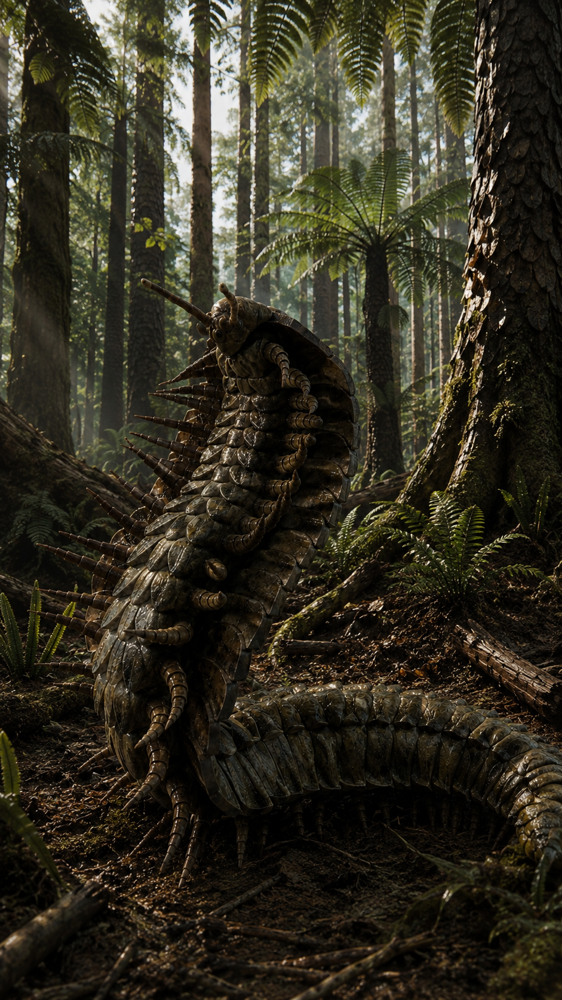
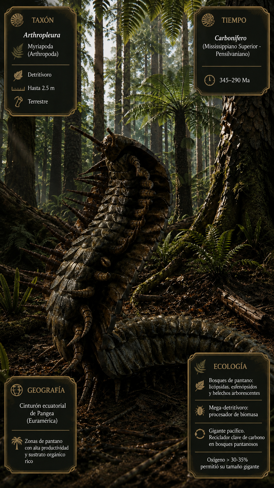
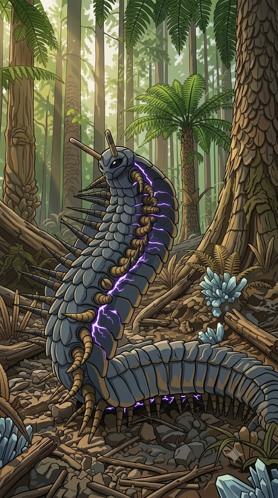

Paleoficha de PalEntropía



TAXÓN:
Arthropleura
CLADO:
Myriapoda (Arthropoda)
DIETA:
Detritívoro (consumidor de materia vegetal en descomposición, esporas y restos de helechos).
TAMAÑO:
Hasta 2,5 metros de longitud y aproximadamente 0,5 metros de anchura.
LOCOMOCIÓN:
Terrestre; desplazamiento mediante numerosos pares de patas articuladas adaptadas al suelo de los bosques pantanosos.
TIEMPO:
Carbonífero (Mississippiense Superior – Pensilvaniense), aproximadamente hace 345–290 millones de años.
GEOGRAFÍA:
Cinturón ecuatorial de Pangea (Euramérica).
EQUIVALENCIA PALEOGEOGRÁFICA:
Bosques pantanosos tropicales con enorme acumulación de materia orgánica.
AMBIENTE PALEAOECOLÓGICO:
Extensos bosques de licópsidas gigantes donde la elevada productividad vegetal generaba gruesas capas de detritos.
ECOLOGÍA:
• Flora: Bosques de pantano dominados por Lepidodendron, Sigillaria, esfenópsidos y helechos arborescentes.
• Fauna secundaria: Artrópodos gigantes, insectos primitivos y los primeros tetrápodos del Carbonífero.
• Nichos: Mega-detritívoro. Procesaba enormes cantidades de materia vegetal en descomposición, desempeñando un papel esencial en el reciclaje de nutrientes de los bosques pantanosos.
• Relaciones: A pesar de su aspecto intimidante, era un gigante pacífico. Su extraordinario tamaño fue posible gracias a la elevada concentración de oxígeno atmosférico del Carbonífero, que favorecía la respiración de los grandes artrópodos.
CLIMA:
Wm15 (Tropical muy húmedo). Clima cálido, extremadamente húmedo y estable, con una producción vegetal excepcional.
ESTADO ECOLÓGICO:
Estable. Arthropleura representa el mayor artrópodo terrestre conocido y simboliza las condiciones atmosféricas y ecológicas únicas del Carbonífero, cuando el gigantismo de los invertebrados alcanzó su máximo desarrollo.